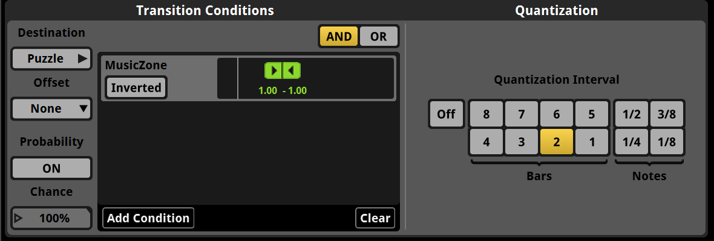
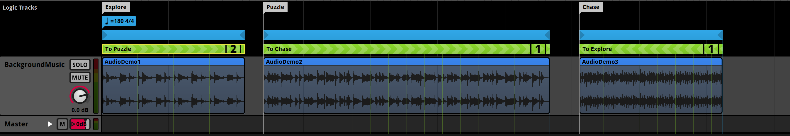
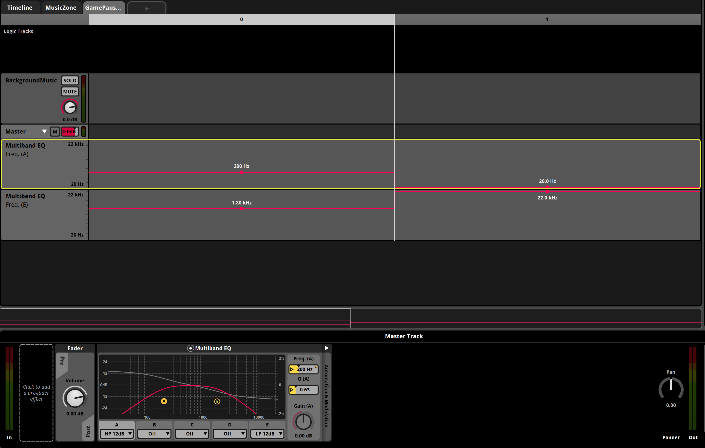
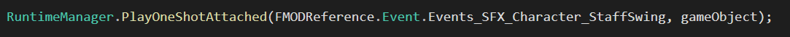
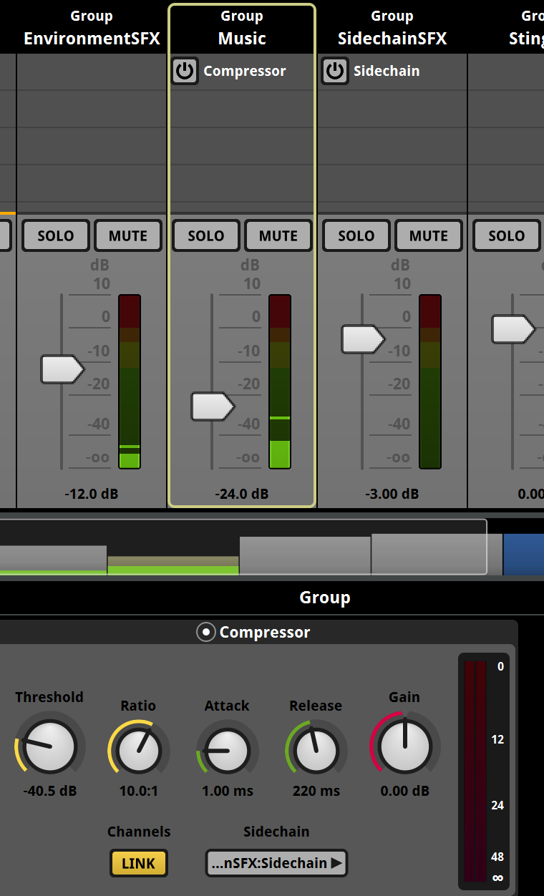
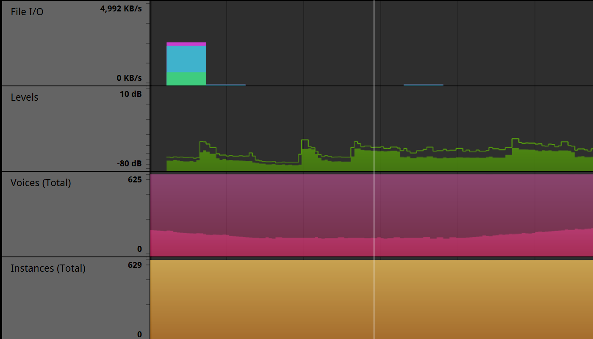
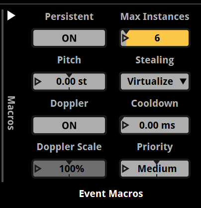

Using the JUCE framework, I designed and coded a simple synthesizer plugin.
This project was a great learning experience, from a technical audio perspective, as well as
a creative and musical perspective. I created a series of videos to document the process
and illustrate some common design patterns relevant to C++ and the JUCE framework.
You can view the video series on my Youtube channel:
Composition Challege
I wanted to push Synthfant to its limit, so I decided to embark on a composition challenge,
using Synthfant for all my instrumentation and sound design. I came up with a theme for each day
and used this concept as guidance for my musical choices. This was an extremely valuable
experience for me, and forced me to be creative given the constraints. You can check out each
composition and walkthrough in the video playlist below:
Audio Implementation
Unity Integration
In the past I've used Wwise for audio integration. I reccomend their awesome online
training courses and even got a certification myself.
For this project, I decided to delve into FMOD.
All music and sound effects were created, mixed, and implemented by me using FL Studio, FMOD and Unity.
I used the 3D Gamekit Lite Unity project
for simple level design and gameplay. Here is a video showing the final product.
The first step was to strip all the Unity audio out of the project and start hooking up events I created in FMOD.
Coming from a traditional music composition background, interactive music provided an interesting challenge for me.
FMOD contains different "instrument" types in order to trigger sound in a dynamic and interactive context.
The most common types are single and multi instruments. Single instruments are just single audio clips.
Multi instruments allow for multiple audio files to be selected based on some prioritization or randomly each time an event
triggers. This adds variety and immersion to the game world.
Events can be 2D or 3D. Background music does not need to include spatialization (or positional information)
and can play as a 2D timeline event.
Music should change based on context: if the player engages in combat, enters a new area, or pauses the game,
the music should transition to a new state. You can further increase the variability of your compositions by
using destination markers and and looping regions. This way, the music plays in a different order every time avoids monotony.
In order to change the background music when releveant, I created trigger zones in Unity and attached
Studio Parameter Trigger to them. When the player enters those areas, this component updates the FMOD parameter
to transition to a different track.
This transition is specified by quantization options that allow for
immediate transitions or to wait a certain number of beats to transition. This keeps things in tempo and won't
disrupt the flow of music for the listener.

Certain transitions, such as combat, should be more immediate.
Within each of these songs, I created loop regions with destination markers set with probability percentages. This indicates
that some percentage of the time the song will transition to the destination, and other times it will loop.

One of the global parameters I created for music was the GamePaused parameter. When the player pauses the game,
I apply a bandpass filter to the mix, creating a muffled sound that indicates gameplay in the background.

Ambient sound, such as wind, bubbling acid, and city chatter definitely needed 3D directional data. These
are fairly easy to set up using the FMOD unity integration, and only become audible when the player is within a certain distance of the emmiter object.
SFX are mainly triggered on a OneShot basis (fire-and-forget) and need to be positioned in such a way that the sound
is coming from the right location. For example, if the player swings their staff, the event needs to be passed along
with the staff game object.

The main instrument types I used for SFX were multi instruments. Setting them to random or shuffle playback gives you the
ability to control the percentage probability of a particular clip being selected for playback. Scatterer instruments are
useful as well if you have a larger number of sounds that need to trigger and overlap each other such as during item spawning.
Mixer
Finally, events can be routed into mixer groups in order to apply batch processing to similar events.
These mixers allow you to control volume and other effects. One of the most logical uses is to
route them into your game's option menu in order to allow players to set volumes for music and SFX, as well as
a global volume that will reference the master bus. One of the interesting things I was able to do as well
is to use a sidechain compressor in order to duck the volume of the music when important SFX triggered. Sidechaining
allowed me to compress (lower the volume of) the music based on the input of an external signal.

Max instances, Priority, Optimization, and Profiling
After getting sound to play in the game we can monitor and tweak certain settings to improve performance and remove
any unnecessary burdens from the CPU. One of the best ways to determine if there are any spikes during processing is to
use the FMOD profiler and connect it to your game using Live Update. Then you can record a session and look for any spikes
or unusual activity. You have the choice of playing back the profiler session using the recorded waveform or recorded API calls.
You also can save or export these sessions for more detailed investigation.

A very important area to consider is located in the Event Macros Drawer. This view provides options for how events are created,
how many instances of an event can exist concurrently, and how they behave if they go over the max instance count.
The most important of these options are the number of Max Instances, Stealing Mode, and Priority.
The stealing mode is very interesting because it specifies how an event will be stopped or virtualized when
it exceeds the max instance count. I often chose to Furthest(which stops the instance that is furthest from the listener),
or Virtualize (which creates the instance but produces no output).

Sound Design
Sound effects
In this first video, I outline my process for sound design, as it pertains to creating game sound effects.
I cover topics such as synthesis, sampling, layering, and processing.
Mixing and Mastering
Next, I delve into the techniques used for arranging, mixing, and mastering the interactive music
stems I composed for the Unity demo above.